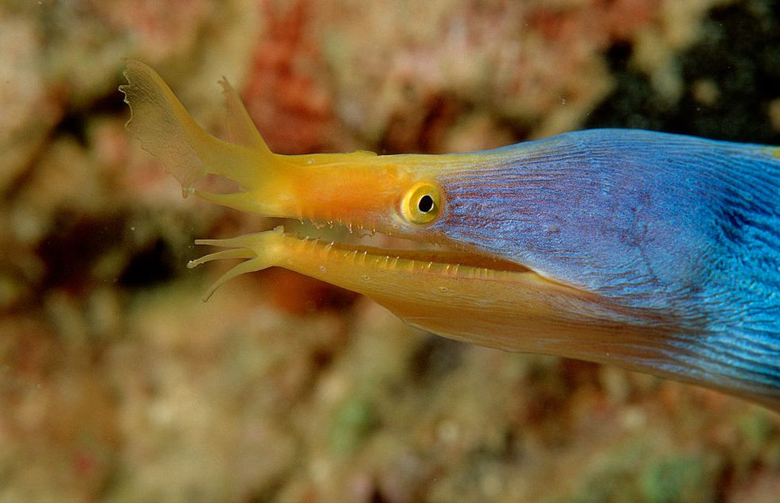

Welcome to our website dedicated to exploring the fascinating world of underwater animals. Dive into the depths with us!
Explore the diverse range of aquatic life, from vibrant fish to mysterious sea creatures.